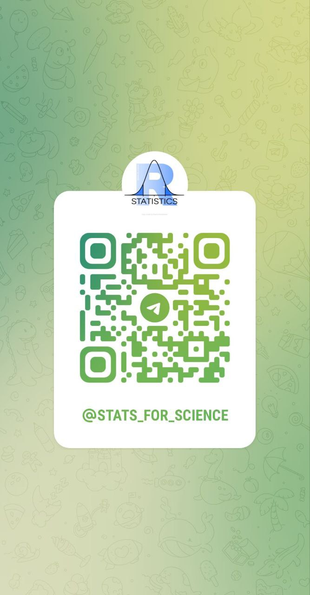
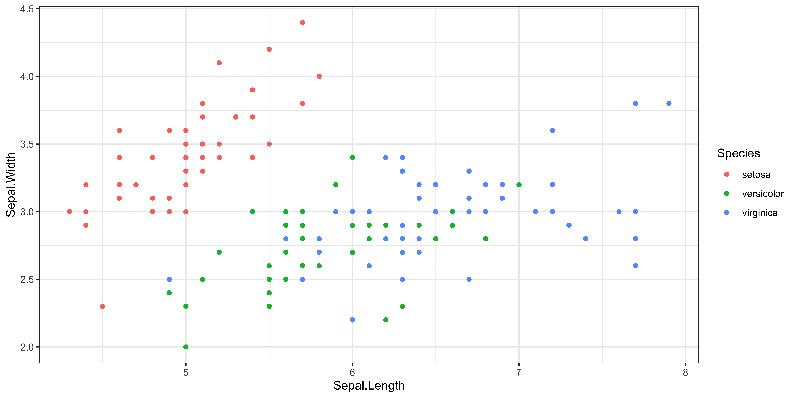
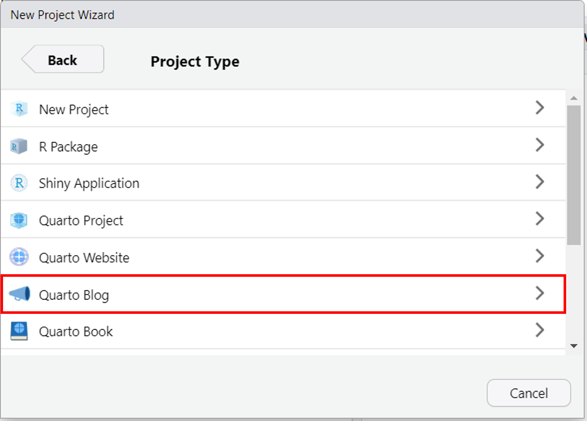

Sepal.Length Sepal.Width Petal.Length Petal.Width Species
1 5.1 3.5 1.4 0.2 setosa
2 4.9 3.0 1.4 0.2 setosa
3 4.7 3.2 1.3 0.2 setosaНаучно-издательская система Quarto для биостатистики
Елена Убогоева
Пара слов о себе
Меня зовут Елена Убогоева
Биоинформатик
Энтузиаст R и статистики
В настоящий момент аналитик данных в X5 Tech
Преподаю на курсах Бластим, а также провожу индивидуальные консультации по R и статистике

План лекции
Обзор Quarto: название, история создания, отличия от RMarkdown, структура Quarto-документа
Quarto in Action: создание презентаций и блогов
Применение в биостатистике
1. Обзор Quarto
Название “Quarto”

Quarto (от латинского quārtō)1 — это формат книги или брошюры, состоящей из листов, напечатанных с восемью страницами текста, по четыре на одну сторону, а затем сложенных дважды, чтобы получить четыре листа.
Слева показан пример кварто-книги.
1. Самой ранней известной европейской печатной книгой является кварто Sibyllenbuch, которая, как полагают, была напечатана Иоганном Гутенбергом в 1452-53 годах.
Quarto – научно-издательская система
28 июля 2022 года компания Posit анонсировала Quarto как новую систему для научно-технических публикаций с открытым исходным кодом.
Система Quarto построена на pandoc и использует Markdown для разметки.
Pandoc — универсальный конвертер для работы с текстовыми документами для форматирования научных и технических текстов, поддерживающий более 40 различных форматов.
Quarto CLI — это интерфейс командной строки, который преобразует различные форматы (
.md,.rmd,.qmdили.ipynb/ Jupyter notebook) в статические отчеты PDF / Word / HTML, интерактивные книги, веб-сайты, блоги, презентации и многое другое.Quarto позволяет работать не только с R, но и с Python, Julia и Observable JS.
Авторы: Carlos Scheidegger (@cscheid), Charles Teague (@dragonstyle), Christophe Dervieux (@cderv), J.J. Allaire (@jjallaire), Yihui Xie (@yihui).
Принцип конвертации документов в Rmd
Работа с Rmd обычно выглядит так:

.Rmd документ -> knitr -> различные аутпуты. Большая часть опирается на Pandoc, кроме xaringan и blogdown.
Работа с Quarto:

Quarto доступно “из коробки” для пользователей других языков программирования без необходимости устанавливать R.
Работа с Rmd-является R-центричной, поскольку нужен R-пакет rmarkdown для рендеринга документов.
Принцип конвертации документов в Quarto
В дополнение к knitr Quarto поддерживает еще Jupyter, Observable JS, что позволяет запускать код на языках Python, Julia, JavaScript.
Обратная совместимость с .Rmd позволяет конвертировать существующие .Rmd-документы в quarto-документы с минимальными изменениями.
Можно экспортировать в 40 различных форматов, поддерживаемых Pandoc, например pdf, word, html, revealjs и многое другое.

Отличия Quarto от RMarkdown
-
Quarto является инструментом командной строки, а не R-пакетом как
rmarkdown, следовательно, Quarto не привязан к языку и позволяет создавать и рендерить документы:- не только из RStudio, но и из Visual Studio;
- без использования R из командной строки, что позволяет применять Quarto не только пользователям R.
Quarto заменяет зоопарк R-пакетов для создания сайтов, блогов, книг, презентаций, научных статей.
Существует сразу несколько engine для запуска кода:
knitr,jupyter, Observable.Однако, некоторые пакеты могут обладать функциями и преимуществами, которых нет в Quarto.
Quarto заменяет зоопарк пакетов
Quarto можно использовать вместо:
Примеры использования разберем во второй части лекции.
Преимущество в единообразной структуре quarto-документов
Структура Quarto-документа
Метаданные документа в формате yaml (YAML Ain’t Markup Language)
Текст документа в Markdown-формате
Ячейки с исполняемым кодом
Метаданные документа
Размещены в начале конкретного документа, а для сложных проектов в файле _quarto.yml.
Содержат всю необходимую информацию о документе: вид аутпута, название, автор, выполнять ли код и другое -> подробнее на конкретных примерах во второй части лекции.
Почитать про yaml-файлы для проектов можно здесь.
Структура Quarto-документа
Метаданные документа в формате yaml (YAML Ain’t Markup Language)
Текст документа в Markdown-формате
Ячейки с исполняемым кодом
Текст документа в Markdown-формате
Можно использовать как стандартную Markdown-разметку, так и применять хоткеи и другие возможности визуального редактора Quarto.
| Markdown | Вывод |
|---|---|
| *курсив* и **полужирный** | курсив и полужирный |
| надстрочный^2^ / подстрочный~2~ | надстрочный2 / подстрочный2 |
| ~~зачеркнутый~~ | |
| `vebratim code` | vebratim code |
Подсказка
С помощью визуального редактора большую часть форматирования можно делать с помощью горячих клавиш:
- Bold – Ctrl+B
- Italic – Ctrl+I
-
code– Ctrl +D
Создание заголовков
| Markdown | Вывод |
|---|---|
| # Заголовок 1 | Заголовок 1 |
| ## Заголовок 2 | Заголовок 2 |
| ### Заголовок 3 | Заголовок 3 |
| #### Заголовок 4 | Заголовок 4 |
Также можно создавать заголовки с помощью горячих клавиш:
Ctrl+Alt+<уровень заголовка>
Ctrl+Alt+2 создаст заголовок второго уровня
По умолчанию заголовки выровнены по левому краю, для выравнивания по центру нужно добавить в yaml-шапку документа опцию css: styles.css (пример файла)
Картинки и гиперссылки
| Markdown | Вывод |
|---|---|
| [Институт биоинформатики](https://bioinf.me/) | Институт биоинформатики |
|  |  |
Подсказка
Также картинки (Ctrl+Shift+I) и ссылки (Ctrl+K) можно вставлять с помощью кнопок в rstudio и горячими клавишами.
Можно настроить свои сочетания хоткеев в RStudio: Tools -> Modify Keyboard Shortcuts
Формулы на основе LaTeX-синтаксиса
Математические формулы в Quarto используют разделители $ для встроенных математических элементов текста и разделители $$ для выносной математики на основе LaTeX-синтаксиса.
| Markdown | Вывод |
|---|---|
| inline math: $E = mc^{2}$ | inline math: \(E = mc^{2}\) |
|
display math: $$E = mc^{2}$$ |
display math: \[E = mc^{2}\] |
Формулы на основе LaTeX-синтаксиса
Например формула дисперсии:
$$
var = \frac{\sum_{i=1}^n{(x_i - \overline{x})^2}}{n-1}
$$
\[ var = \frac{\sum_{i=1}^n{(x_i - \overline{x})^2}}{n-1} \]
Редактор формул работает очень удобно
Выносные блоки (callout)
Заметка
Этот блок используется для заметок
Подсказка
Этот блок используется для советов и подсказок
Important
Этот блок используется для важных замечаний
Caution
Этот блок используется для предостережений
Warning
Этот блок используется для предупреждений
Структура Quarto-документа
Метаданные документа в формате yaml (YAML Ain’t Markup Language)
Текст документа в Markdown-формате
Ячейки с исполняемым кодом
Ячейки с исполняемым кодом
Чтобы показать, как выглядела ячейка с кодом вместе с настройками чанка, достаточно написать #| echo: fenced
Незаменимая вещь при обучении
Параметры чанков с кодом
Как и в .Rmd, помимо возможности задать глобальные настройки чанков в yaml-документе, можно настроить параметры отдельного чанка, записав их с таким знаком: #| и в формате ключ: значение.
2. Quarto in Action
Применение на конкретных кейсах
Презентации в формате
revealjs.Блог на примере своего блога R4Analytics.
Вебсайт хорош для создания резюме, страницы курса.
bookdownпереносится из .Rmd с минимальными изменениями.
Разберем подробно первые два, с остальным можно ознакомиться в лекции Евгения Матерова.
Презентации в формате revealjs
Для создания в RStudio: File -> New File -> Quarto Presentation
Базовые настройки revealjs презентации:
По умолчанию в формате revealjs показ кода выключен echo: false
Для того чтобы включить показ кода и аутпута нужно указать:
Принципы верстки с помощью css/scss
Для настройки шрифтов, цвета ссылок, формата ячеек с кодом, нужно использовать scss стили.
Пример scss файла:
Подробнее можно посмотреть: здесь
Также в Quarto есть ряд встроенных тем на Bootstrap 5, подробнее здесь
Тонкие настройки презентации
Можно менять цвет строк с помощью настроек Div: style=“color: purple”
Выглядит это так:
Можно менять цвет и размер слов с помощью выделения квадратными скобками и указания размера шрифта/цвета [цвет]{style=“color: red”}
Кроме этого, в презентации можно использовать лазерную указку (pointer) и доску (chalkboard). Доска доступна сразу по умолчанию, а указку нужно установить.
Вспомогательные файлы для настройки оформления
scss-файл для настройки шрифтов, размера шрифтов, цвета ссылок и кода
-
css-файл для настроек отдельных элементов
-
lua-файл для настройки pandoc-аутпута
Пример yaml-файла
Здесь основной акцент на файлах для кастомизации внешнего вида презентации.
Подсветка кода
Можно настраивать показ результата выполнения кода в соседней колонке на слайде (output-location: column) и выделять интересующие строки с помощью опции: #| code-line-numbers: '2'
Подсветка кода

С помощью этого можно иллюстрировать пошаговое выполнение кода.
Выгрузка презентации в pdf
Открыть в презентации Tools -> PDF Export mode (или нажать e).
Далее выбрать печать (Ctrl + P) -> экспорт в PDF (на Windows), на MacOS меню экспорта в PDF открывается автоматически.
Формат может немного измениться, но способ рабочий.
Создание своего блога в Quarto
File -> New Project -> New Directory -> Quarto Blog

Создание своего блога в Quarto
Основные моменты:
Материалы для публикации должны быть в папке posts/
При отладке можно документ не публиковать сразу и тогда в yaml-файле указать
draft: true.Можно настраивать категории постов.
Пример моего блога, пример Евгения Матерова (ссылка).
Вся основная информация по созданию блога и настройке в документации.
Веб-сервисы для публикации
- Netlify – поддерживает пользовательские домены, аутентификацию и другое.
- GitHub Pages – удобно в связке с GitHub
- Quarto Pub – простой сервис, но возможностей меньше, чем у первых двух
Преимущества и недостатки Quarto
| + | - |
|---|---|
| Кроссплатформенность | Не все фишки из отдельных пакетов Rmd реализованы в Quarto |
| Визуальный редактор (но он есть и просто в .Rmd) | Нет аналога learnr для создания учебных материалов |
| Хорошая документация | Инструмент активно развивается, бывают баги |
| Большое количество расширений |
3. Применение в биостатистике
Применение в html- и word-отчетах
Настройки очень похожи на .Rmd-файл
Параметры для локализации тут для публикации русскоязычных отчетов.
Отчеты в pdf-формате
Здесь нужно настраивать LaTeX, почитать quick start здесь
Установить tinytex:
quarto install tinytexПри наличии проблем с кириллицей
плакатьпосмотреть здесь.
Caution
Вообще, простые отчеты для внутреннего пользования проще сделать в html-формате
Применение в публикациях
Есть готовые форматы для ряда журналов, посмотреть можно здесь и здесь.
Очень удобно сделаны цитаты с возможностью подключать Zotero и загружать статьи с помощью doi -> проиллюстрировать.
Выводы
- Quarto расширяет возможности RMarkdown для пользователей других языков программирования и объединяет разные пакеты в один.
- Дает очень большие возможности для преподавания и научных публикаций.
- При освоении Quarto придется немного разобраться с css и другими элементами верстки.
- Для работы с pdf-форматом нужно разобраться с LaTeX.
Ссылки на другие материалы
Сайт на Quarto, посвященный работе с Quarto с материалами на Quarto от Евгения Матерова.
Книга про Quarto от Евгения Матерова (книга еще в процессе написания).
With Quarto Coming, is R Markdown Going Away? No. by Yihui Xie
Notes on Changing from Rmarkdown/Bookdown to Quarto by Nicholas Tierney
We don’t talk about Quarto by Alison Hill
Презентация по Quarto от Mine Çetinkaya-Rundel
Quarto for Academics | Mine Çetinkaya-Rundel
У меня сайт блога и этой презентации тоже сделаны в Quarto.
Вопросы?
Подписывайтесь на телеграм-канал: Статистика и R в науке и аналитике